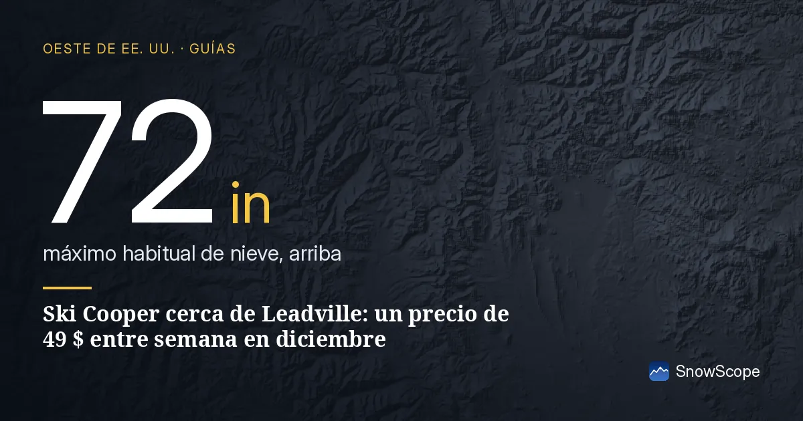

Ski Cooper cerca de Leadville: un precio de 49 $ entre semana en diciembre
Ski Cooper es el tipo de sitio del que los esquiadores con presupuesto ajustado se pasan consejos: una estación alta y sencilla cerca de Leadville que mantuvo su precio de adulto entre semana en 49 $ para 2026-27. La nieve de diciembre allí es modesta más que profunda, pero muy alta y muy temprana.
Consulta la previsión de nieve en tiempo real de Ski Cooper en la app SnowScopeEspesor de nieve, alertas de nieve polvo y mapa 3D, gratis.
La altitud es el gancho
Los remontes de Cooper empiezan sobre 10 580 ft (3226 m) y llegan hasta unos 11 740 ft (3579 m) en nuestra cartografía, con 5 remontes y unas 20 mi (32 km) de pistas. En un invierno típico de nuestro registro, la nieve duradera llega a media montaña a principios de octubre, de lo más temprano en Colorado.

Espesor modesto, buenas probabilidades
Aun así, la nieve no se acumula deprisa. En un 1 de diciembre típico, a media montaña, unos 11 160 ft (3402 m), hay 18 in (46 cm); el 15 de diciembre, 26 in (66 cm); el día de Navidad, 31 in (79 cm). Arriba apenas es más profundo, 27 in (69 cm) en un 15 de diciembre típico.
El 15 de diciembre, el 70 % de los inviernos tuvo 20 in (50 cm) o más a media montaña, y el 91 % al menos 10 in (25 cm). Para el 25 de diciembre la proporción por encima de 20 in llega al 80 %. Un diciembre flojo deja 11 in (29 cm) el día 15: suficiente para el terreno preparado y suave por el que Cooper es conocido.

La división entre semana
Para 2026-27, Ski Cooper mantiene los precios del año pasado: un forfait de día para adultos (22-68 años) cuesta 49 $ de lunes a viernes, fuera de festivos, y 99 $ los fines de semana y festivos. Toda la estrategia de ahorro cabe en una frase: esquiar en Cooper entre semana.
¿Cooper, Loveland o Vail?
Loveland, la otra estación alta del Front Range, vende online a 60 $ hasta el 13 de diciembre y luego al precio de taquilla de 159 $ desde el 14 de diciembre, con 29 in (74 cm) a media montaña en un 15 de diciembre típico y el 67 % de los inviernos por encima de 20 in. Nieve similar, y el precio entre semana de Cooper se mantiene más bajo todo el mes.
Vail, el gran complejo vecino, tenía 24 in (62 cm) a media montaña en un 15 de diciembre típico según nuestros datos; no comparamos sus precios. Al menos a principios de diciembre, la altitud de Cooper lo deja al nivel de su famoso vecino en cuanto a nieve.
Antes y ahora
Cooper ha aguantado mejor que muchos: el espesor típico del 15 de diciembre a media montaña fue de 26 in (66 cm) en los primeros 15 inviernos de nuestro registro y de 24 in (60 cm) en los últimos 15, aunque la proporción por encima de 20 in cayó del 80 % al 53 %. El invierno pasado tuvo 16 in (42 cm) en esa fecha.
Consejos para esquiadores
- Esquía de lunes a viernes, fuera de festivos, para el precio de 49 $.
- Leadville está a unos 10 000 ft: pasa allí una noche antes de esquiar a fondo.
- Tennessee Pass (US-24) puede estar helado y ventoso: lleva cadenas y comprueba el estado de la carretera antes de salir.
- El frío es el principal peligro de la temporada temprana aquí: lleva capas más abrigadas de lo que crees.
Referencias y créditos
- Ski Cooper, day pass 2026-27 (official) www.skicooper.com/cooper-day-pass/
- Loveland Ski Area, lift tickets 2026-27 (official) skiloveland.com/lift-tickets/
- OpenSkiMap (mapped lifts and runs) openskimap.org/
- avalanche.org, US avalanche centers and forecasts avalanche.org/
Sobre estas cifras
Cifras de nieve: histórico de nieve de SnowScope, 46 inviernos pasados (1980-81 a 2025-26) en las alturas indicadas (base, media, cima), una reconstrucción de la nieve pasada para una zona corregida por altitud (basada en ERA5-Land; Snow_Hydro 1 km para Marruecos), no los partes de la estación. Nieve actual: el mapa de SnowScope. Remontes, pistas y alturas: cartografía OpenSkiMap. Precios: las páginas oficiales listadas abajo, consultadas el 13 de noviembre de 2026; los precios dinámicos cambian con la fecha y la demanda.
Boletines oficiales de aludes: Colorado Avalanche Information Center
Citar este informe
Para investigación, docencia o prensa: cifras y gráficos reutilizables libremente bajo CC BY 4.0 con esta cita.
SnowScope (2026), Ski Cooper cerca de Leadville: un precio de 49 $ entre semana en diciembre, https://snowscope.app/blog/es/2026/11/ski-cooper-leadville-december-49-dollar-weekday.html, consultado el 2026-11-15
SnowScope (Atlas Labs). (2026, November 15). Ski Cooper cerca de Leadville: un precio de 49 $ entre semana en diciembre. SnowScope snow reports. https://snowscope.app/blog/es/2026/11/ski-cooper-leadville-december-49-dollar-weekday.html
BibTeX
@misc{snowscope2026skicooperleadvilledecemb,
author = {{SnowScope (Atlas Labs)}},
title = {Ski Cooper cerca de Leadville: un precio de 49 $ entre semana en diciembre},
year = {2026},
month = nov,
howpublished = {\url{https://snowscope.app/blog/es/2026/11/ski-cooper-leadville-december-49-dollar-weekday.html}},
note = {Published 2026-11-15 09:34 UTC; accessed 2026-11-15}
}· CC BY 4.0 · Métodos, datos y herramientas →
Ski Cooper: nieve y temperatura según la altura, este invierno vs el pasado (herramientas) →
Sigue Ski Cooper
Gratis: un aviso cuando llega la nieve y la previsión cada mañana.